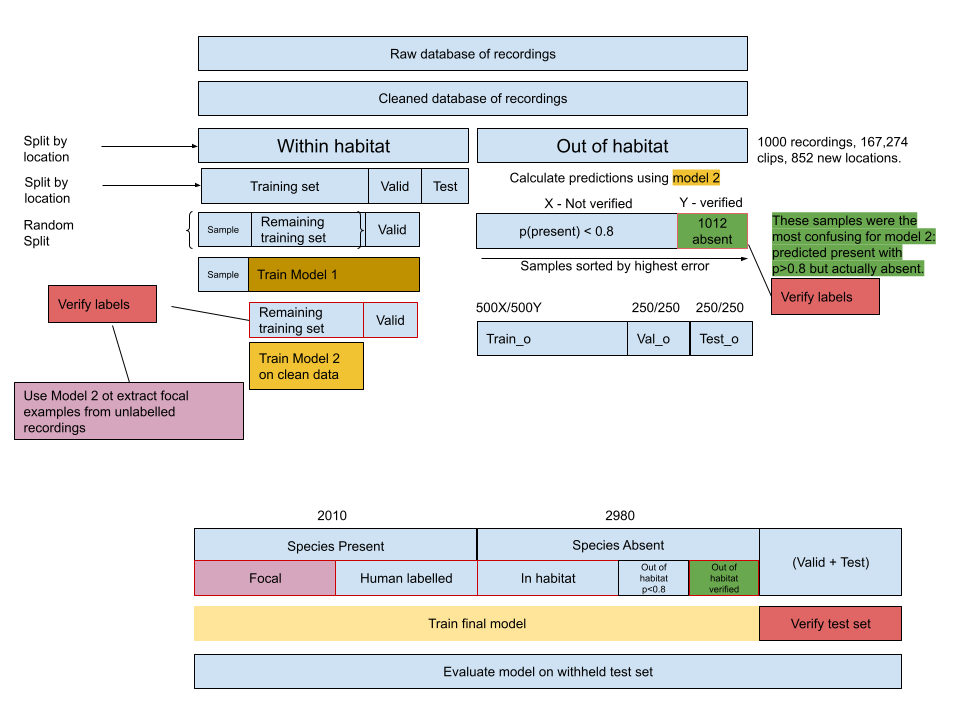
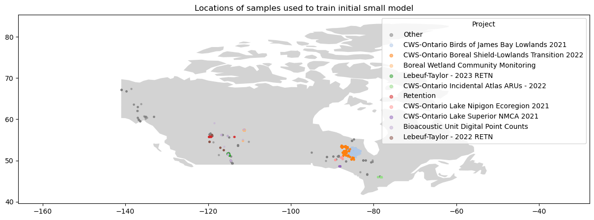
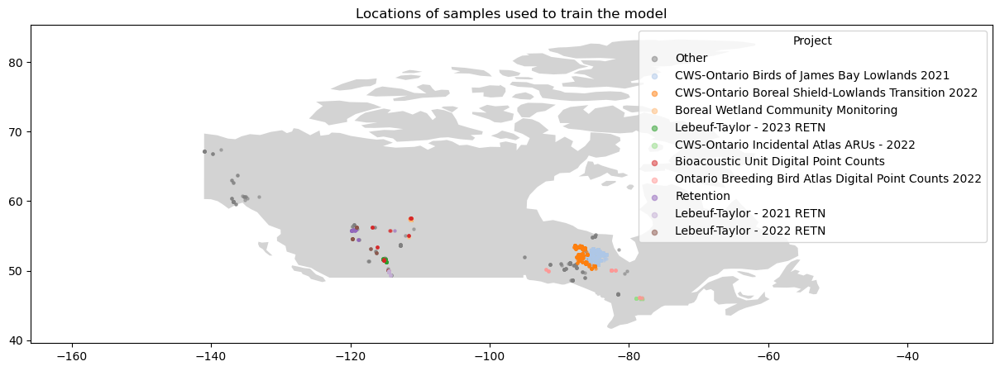
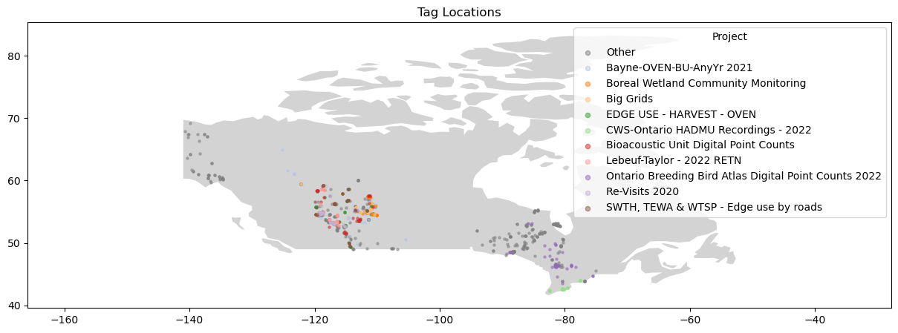

CNN Birdsong Classifier Description
Process description for the Olive Sided Flycatcher recognizer.
This project is open sourced and available here, along with a more in depth model development walkthrough for people wanting to repeat the training process.

Image - dataset and model development pipeline, described below
Project brief - Build a model to detect the Olive Sided Flycatcher in audio recordings. - The model will be used on field recordings on audio collected on ARUs in BC, Canada. - Try to make the model as good as possible, try to beat the current state of the art.
Approach
Train, test, inference similarity
In order to train a model which would be useful during production, I decided to focus on creating a high quality training set which is as similar as possible to the data the model would encounter at inference time. I took measures to avoid overfitting which can happen when the model is evaluated on examples which it was trained on, leading to over-optimistic results.
The model needs to work on future audio recordings as well as a backlog of historic recordings. Therefore the training set should contain audio from a variety of recording qualities and devices; if the model only encountered high quality recordings during training, it may not perform well on low quality mp3 recordings at inference time.
I also learned that the model would need to be run on audio data collected in BC. There wasn’t a large quantity of data available in BC for training, however I had access to data collected in Canada from some nearby provinces, and others further away but which would use similar recording techniques to those used in BC. Access to field recordings from the USA would have been ideal, but I was unable to obtain these.
To simplify dataset creation, only the song of the Olive Sided Flycatcher was used, and not its call. The species call is less distinctive than its song. This was omitted from the positive labels unless it also occurred with the song.
At inference time, the model would be run on long audio recordings. A moving window is used to split the audio into segments, and the model is run on each of these segments. Since I was aiming to match the training dataset as closely as possible with the inference data, I used the same moving window technique to generate the training examples from source audio.
I trained a model exclusively on audio collected from ARUs in the field, and built an initial dataset of training examples entirely from within the habitat of the species, with the speices song either present or absent. This ensured that the model was really learning the shape of the bird song, and not the accompanying environmental sounds or any potential artifacts introduced by layering audio samples - this was a concern I had, but not one I had read about in literature.
Initially there was no set of labels for the absent class. By looking only at audio which contained a positive ID of the target species, I was able to infer an absent class by sampling from sections of audio before the first instance of the target species song. This was possible due to the tagging method used on WildTrax, where only the first vocalization of an individual is tagged.
I used a model to pull out additional close range songs from previously unlabelled portions of the recordings.
After that I added recordings from other locations outside of the species habitat. I paid particular attention to those model detections which were most confidently wrong, and added these to later training sets. In this way, the model was able to bootstrap examples into the training set which would contain edge cases and examples which had been most confusing (misidentified as the target species) during prior runs. This was a technique I adapted from the fastai course on deep learning, from a chapter on image classification, and have since learned has the name Hard Example Mining.
Data source
I was given access to recordings collected across Canada by various organizations, including the start and end times of olive sided flycatcher songs within these recordings, and the unique location IDs for each recording. As a proxy for the species habitat, I chose any location ID which had at least one Olive Sided Flycatcher song detected in it.
Model Training.
A step by step walkthrough for model training can be found in the repository for this project. This is a summary of that process.
1. Data cleaning
To begin with, I found all the target species songs labelled in WildTrax, and downloaded the recordings containing these songs. I then calculated the start and end times of a moving window along these recordings, and created labels indicating whether the target species was present or absent in each window, up until the first detection of the species in each recording.
After verifying the values in the training set, I found that out of the positive examples, 222 out of 3000 were mis labelled as containing the target species when they did not, and that in the inferred negative sections of audio (the section of audio before the first vocalization of the target) - 231/1806
I estimated the accuracy of the human labelled data I had to be around 70% - some species were mis-labelled, and sometimes there would be a label indicating the first detection of the target species when in fact there were earlier vocalizations. To train a decent model I would need to verify the labels manually.
Here are some of the cleaning steps taken at the level of the original database of tags: - remove any tags deemed ‘too many to tag’ - remove any tags not labelled as ‘song’ - remove any recordings not tagged in wildtrax - remove any tags which don’t contain a url link to audio - remove any duplicates or synthetic audio from the database
Available recordings were split into two sections - recordings from locations which had human labelled tags of the target species, and recordings from other locations which had never had the target species tagged there. The recordings from other habitats were put to one side until later stages of dataset development.
Train - Validation - Test split
Within those recordings from locations which contianed the target species, those same location IDs were used to further split the data into training, validation and test sets. The training data is what was used to train the model, and the validation data was used to evaluate the model throughout the training process - in order to get an idea of how the model performs on unseen data. The test data was withheld until the very end of model training, and was used to evaluate the model’s performance on a new set of completely unseen data, also from new locations. This is done to avoid overfitting to the validation set- which can happen if the apparent improvements to the model are actually just a lucky set of hyperparameters which work well for that particular set of validation data.
3 second window start and end times with a 1.5 second overlap were generated using OpenSoundScape’s AudioSplittingDataset class for all of the data, and labels were created using the following rules: - If the species detection tag falls fully within a window, the window gets the label 1 meaning present. - If the audio is from before the first detection of the species in the recording, the window gets the label 0 meaning absent. - If the detection tag partially overlaps the start or end of the window, the window is discarded.
This created an initial dataset of 3990 human labelled present examples, and 44,948 inferred absent examples available for training. The validation set was made up from an additional 1011 present and 10,596 inferred absent examples. The test set contained an additional set of examples of similar size to the validation set, and was set to one side until the end of the training process.
Train an initial model
- I used OpenSoundScape to set up the model training pipeline, handling image augmentation, conversion of the audio in realtime to spectrograms, batching of the training examples, SGD etc. This allowed me to focus more time on data cleaning and model evaluation.
The model architecture chosen was a ResNet34, which is a convolution neural network pretrained on the imagenet dataset for image classification tasks. Transfer learning applied to this model allows us to take advantage of the training the model has already undergone on the imagenet dataset, and apply it to our own audio classification task. Further improvements could be made by choosing a model trained on spectrograms, or using another architecture such as EfficientNet, but the ResNet34 model seemed to be performing well at this task.
A sample of 1000 present and 1000 absent samples was taken, and a model was trained on this dataset.
The spatial distribution of these recordings is shown below.

Label verification and inclusion of edge cases
I wrote a python function to help verify the labelled data. The function iterates through samples, providing the spectrogram and 3s of audio for listening, enabling me to check the labels. It took about 4-5 hours to check 1000 samples. Samples were sorted by the model’s confidence for each sample - meaning I could focus verification work on those samples which were most confidently wrong.
For example, if the model predicted p(present) = 0.99, and the label was 0, I’d listen to those examples and re-label them if they actually contained the target species. Similarly, if the model predicted p(present) = 0.01, and the label was 1, I’d listen to those examples and re-label them if they didn’t contain the target species. For the target present class, all of the samples were verified manually.
For the absent class, there were too many samples (~33,000) to check manually, so the samples were sorted in order of the model’s highest confidence of target presence, and the top 1806 samples were checked until predicted probabilities of 0.8 were reached. Within these checked samples, 231 were found to contain the target species, and were re-labelled. The remaining samples were assumed to be correctly labelled. The absent class for the verified training set was constructed from 200 of those samples which were predicted present, but actually absent, and 800 from the remaining samples, for a total of 1000 absent samples. Finally these absent samples were verified by listening to the audio and looking at spectrograms.
The reason I included 200 samples which the model was confidently wrong about is to give future models more examples of edge cases to learn from. These are the hard examples in hard example mining.
This verification process was done at various stages during dataset development, allowing me to create a more accurate set of training examples, a more accurate validation set, and finally to check the examples in the test set to re-label any obviously mis-labelled examples.
Custom label verification process
https://drive.google.com/file/d/17tTa0StctX1ZfcWnhtLAg8CwkOCQwNVa/view?usp=sharing
Above: example of custom label verification process - two different brightness levels are used, and audio can be listened to.
Train a second model
A second model was trained using cleaned human labelled data, without the errors of the original human labelled dataset, allowing the model to learn from a more accurate set of training examples.

Focal example bootstrapping
The human labelling process only looked for the first vocalization of the target species within a given time interval. This meant that the most prominent vocalizations might occur later in the recording, and would not be labelled. The second model was used to make predictions of target presence on the remainder of the recordings from within the species habitat, and these predictions were sorted by model confidence. This created a new set of examples which were close-up, focal examples of the target species which were verified then added to the training set.
An experimental model was trained using only focal examples, and absent examples. This produced a model with high precision but low recall compared with previous models.
Out of habitat examples
So far all the audio used had been taken from habitats where the target species had been labelled in the wildtrax database. To add training data from outside those locations, the following process was used.
- 1000 recordings were downloaded from a random sample of all the recordings from locations not previously tagged as containing the target species. From these, 852 new locations were represented.
- These recordings were inititally assumed not to contain vocalizatons of the target species, and so were given a label of zero meaning target absent.
- Model 2 was used to make predictions on all of this audio, creating set of 168431 new 3 second samples.
- The examples with p(target present) > 0.8 were all checked manually, and those containing the target species vocalization were re-labelled as present.
- Those examples with p(target present) > 0.8 which did not contain the target species vocalization were assigned a label of target absent, and added to the training set. These examples allowed the model to encounter species with similar songs to the target and to learn not to classify these as present. These 1012 samples with p(present) > 0.8 comprise the 0.6% of the total 168,431 out of habitat samples, and these were chosen preferentially to give the model more confusing examples to learn from.
- A set of out-of-habitat absent examples was created by taking 1000 of those examples which produced the highest error for the model 2, and 1000 from the remaining samples with p(present) < 0.8. This was further split into training, validation and test sets and combined with the existing datasets for training and evaluation of the final model.

Final model training
A final dataset was constructed using the following sources: - 1000 verified human labelled present examples from the original wildtrax tags - 2000 verified human labelled inferred absent examples from the original wildtrax tags - 1000 verified model extracted focal present examples from unlabelled recordings - 500 verified absent examples from outside target habitat, picked from those most confusing to a previous model. - 500 additional absent examples from outside target habitat.
This created a total of 2000 present and 3000 absent examples for training.
A resnet 34 model was trained for 20 epochs with a learning rate of 0.001.
Opensoundscape has image augmentation, weight decay and other good practices built into their model training pipeline. These were left at default values.